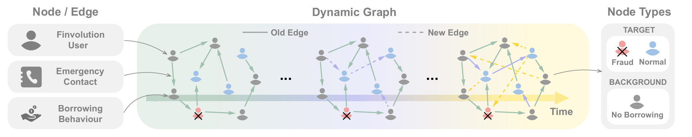

Financial Graph Anomaly Detection
Python, PyTorch, Graph Analytics
Overview
Fraud detection on financial networks is fundamentally different from tabular classification. Anomalous accounts often look normal in isolation but reveal themselves through structural signals: unusual connectivity patterns, neighbor distributions, and temporal dynamics. This project explores graph-based anomaly detection on DGraph (Huang et al., NeurIPS 2022), a large-scale real-world financial graph with ~3M nodes, ~4M dynamic edges, and ~1M ground-truth labels, used under official permission for Ristek Datathon 2024.

Graph-Level Feature Engineering
Our role was limited to setting up the DGraph dataset for the datathon competition. Nevertheless, studying the paper and dataset in depth provided a solid understanding of the domain and the graph-based feature engineering strategies that distinguish fraudulent accounts from legitimate ones:
- Connectivity patterns - degree distributions, in/out-degree ratios, and edge density within local neighborhoods to identify accounts with abnormal transaction volumes or asymmetric flows.
- Neighbor distribution - aggregated statistics (mean, std, skewness) of neighbor features to detect accounts surrounded by other anomalous nodes, exploiting the homophily of fraudulent clusters.
- Temporal dynamics - transaction timing features capturing bursts of activity or unusual temporal spacing that distinguish fraud from legitimate usage.